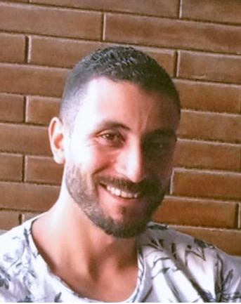

Personal Information:
- Marital status : Married
- Nationality : Egyptian
- Place of Birth : MenoFia
- Date of Birth : December 2, 1990
- Religion : Muslim
- Military status : Exempted
Profile:
Strong leader and problem-solver dedicated to streamlining operations to decrease costs and promote organizational efficiency. Uses independent decision-making skills and sound judgment to positively impact company success.
Objective:
Always seeking new challenges.
Education:
Bachelor of Accounting - University of Menofia (2008-2012)
Langauges:
- Arabic : Mother Tongue.
- English : Upper Intermediate.
Business Skills & Knowledge:
- Interpersonal Skills:
- Leadership
- Train of Trainer.
- Communication Skills.
- Presentation skills.
- Team building.
- Information Technology:
- Network Fundamentals.
- Operating System.
- Database fundamentals.
- Oracle Database Admin (SQL/PL SQL +DBA).
- SQL Database.
- Crystal Report.
- Applications & Systems:
- Oracle Hospitality Materials Control system.
- Micros POS systems.
- Infor Sun systems.
- Maestro HR system.
- Maisonette Real Estate Management system.
- Microsoft Dynamics 365 CRM (Sales, Marketing & Client Relations).
- IBM Maximo asset Management and Facility Management.
- Microsoft Power BI.
- Development Courses:
- PL-400T00 Microsoft Power Platform Developer
Course Place: Skillability
- PRINCE2 Foundation
Course Place: MEGASOFT
- Business Analysis Foundation
Course Place: MEGASOFT
Work experience:
From: Feb 2018 till current time.
Tatweer Misr for urban Development
Applications Assistant Manager
Duties
- Administer application and provide technical expertise in development and execution of all IT systems
- Organize and manage customer and employee training classes.
- Prepare presentation for sessions at lectures, training programs and fairs.
- Coordinate with departments and prepare technical reports, training materials and documentation for end users.
- Develop software products and select appropriate software applications according to business requirements and ensure achievement of results.
- Organize regular research studies for new technologies and fit them into the organization.
- Provide post-implementation support and on-going support measures.
From: August 2013 till Jan 2018.
Advanced Computer Technology (ACT)
Specialist Oracle hospitality Materials control
Duties
- Customize the application to fit customer operation.
- Amend/modify /correct system issue using PL/SQL.
- Create or amend reports to fulfill customer needs.
- Handle any troubles that might happen, provide workaround solutions when applicable.
- Escalate cases to Oracle support when required.
- Test new Versions/batches.
- Responsible for supporting 500+ customers.
- Training new colleagues.
From: Dec 2012 till July 2013
Wasla Outsourcing Company (Vodafone)
Customer Service Representative
Duties
- Maintains customer records by updating account information.
- Resolve product or service problems by clarifying the customer's complaint; determining the cause of the problem; selecting and explaining the best solution to solve the problem; expediting correction or adjustment.
- following up to ensure resolution.
Characteristics:
Energetic, Flexible, decisive, Co-operative person, ability to work under pressure, work individual or with a teamwork, helpful, eager to learn and have an excellent communication skill.
Projects I have implemented:
Projects I have implemented
Other:
Contact Info